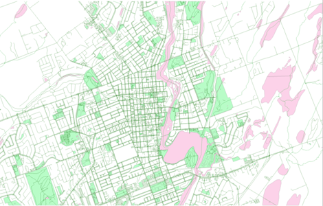
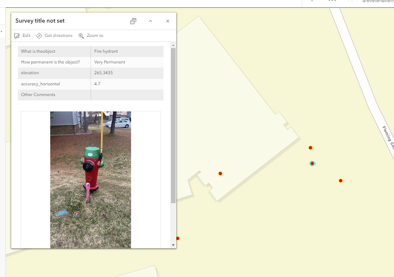

Collection
Fleid Maps
Overview
Embark on a transformative journey of Spatial Analysis with our team. We specialize in harnessing the transformative capabilities of ArcGIS to provide cutting-edge spatial analysis solutions. Our dedicated team of GIS experts is committed to assisting businesses, organizations, and government entities in leveraging location-based data for informed decision-making.
Overview
Embark on a transformative journey of Spatial Analysis with our team. We specialize in harnessing the transformative capabilities of ArcGIS to provide cutting-edge spatial analysis solutions. Our dedicated team of GIS experts is committed to assisting businesses, organizations, and government entities in leveraging location-based data for informed decision-making.
Survey123
Survey123 is a tool that can used to collect data and be shown in a scene if z-values of points are enabled.
Following the Tree Survey from Geom65, we made a simple generic survey123 that also collected z-values when the GPS point was collected.
The we went out to collect the data points. All points shown up on the map and are read to be looked at in a scene.
